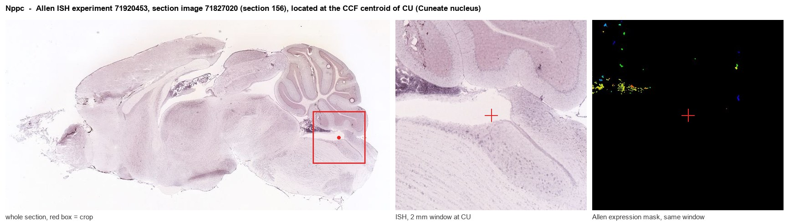
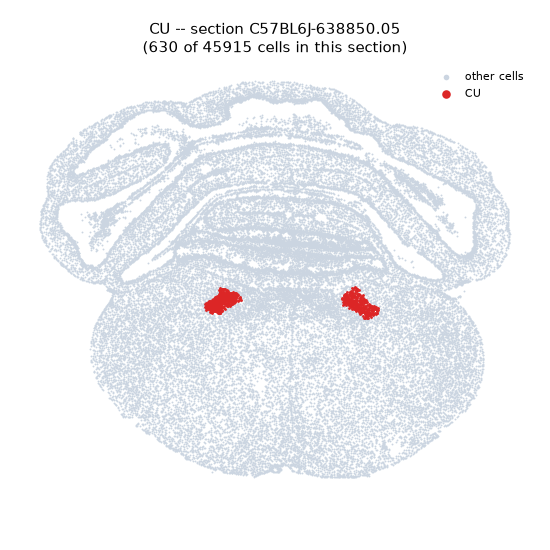
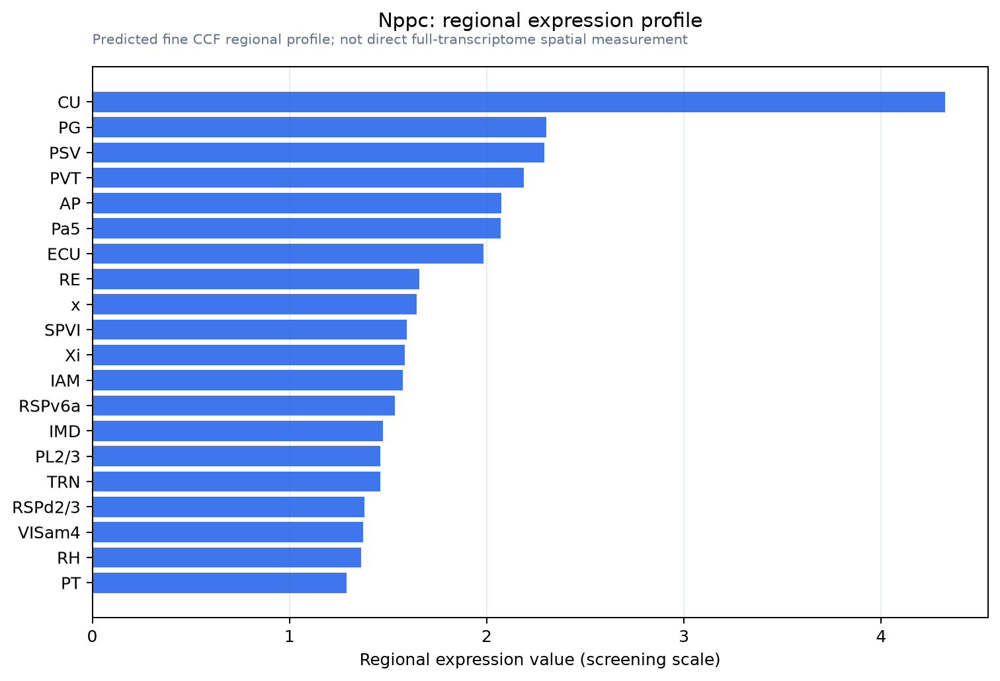

Nppc
Spatial tier: RESTRICTED · Class: OTHER · Top region: CU (Cuneate nucleus) · Positive regions: 13/554
43.7Discovery Score
41.6Targetability Score
CEvidence grade C
What this means: Nppc: fine CCF profile is restricted toward CU (top regions: CU, PG, PSV, PVT, AP; 13 positive regions); direct spatial validation is still required.
Function in CU: evidence, prediction, innovation
- Gene function
- NPPC encodes C-type natriuretic peptide (CNP), the most abundant natriuretic peptide in the central nervous system and cerebrospinal fluid. Unlike ANP and BNP it acts largely as a local paracrine signal rather than a circulating hormone, binding the receptor guanylyl cyclase NPR-B (Npr2) to raise cGMP and activate cGMP-dependent protein kinase I. This cascade controls endochondral bone growth and, in the nervous system, the T-shaped bifurcation of primary sensory axons.
- Region function
- The cuneate nucleus is the dorsal-column relay for tactile and proprioceptive input from the forelimb; its projection neurons perform the first stage of feature extraction on primary afferent input before sending it to the contralateral thalamus via the medial lemniscus.
- Published in this region
- inferred No region-specific literature found. Langub et al. 1995 mapped natriuretic peptide precursor mRNAs across rat brain and reported CNP expression in numerous brainstem regions without resolving the cuneate nucleus, and the closest functional link is that CNP-NPR2-cGKI signalling is required for dorsal-root afferents to bifurcate at the dorsal root entry zone, so that in CNP mutants the ascending branches that supply the dorsal column nuclei are malformed and postsynaptic input to second-order neurons is reduced (Schmidt et al. 2009; Ter-Avetisyan et al. 2014).
- Predicted function
- Prediction: CNP produced within the cuneate nucleus itself is predicted to act as a target-derived cGMP signal that shapes the arborisation and terminal refinement of incoming forelimb dorsal-column afferents during development, and in adults to serve as a slow paracrine modulator that tunes the gain of cuneate projection neurons through cGKI-dependent presynaptic inhibition. Conditional Nppc deletion restricted to the cuneate, or Npr2 deletion in cuneate neurons, is predicted to coarsen the somatotopic map of the forepaw representation and degrade fine tactile discrimination and texture-guided behaviour without loss of gross touch sensitivity.
- Innovation
- ★★★★★ 5/5 CNP-cGMP signalling is well established for sensory axon bifurcation but has never been examined inside the dorsal column nuclei, a region now highly tractable with modern Cre lines and tactile behavioural assays.
- Tools
- Nppc knockout and Nppc floxed mice; Npr2 (GC-B) knockout, Npr2 floxed and cGKI mutant mice; CNP-22 peptide and the NPR-B antagonist P19; cGMP sensors; Atoh1-Cre, Cux2-Cre and Gdnf-CreER lines that label cuneate projection neurons and dorsal-column afferents.
- References
Direct evidence located at the region

Allen ISH experiment 71920453, section image 71827020 (section 156): the section that contains the CCF centroid of Cuneate nucleus according to the Allen image-to-atlas alignment (reference_to_image), with a 2 mm window around that point. Left: whole section, red box = window. Middle: ISH signal. Right: Allen's expression-mask view of the same window. open this image in the Allen viewer
Look it up yourself: Allen Mouse Brain ISH for NppcAllen reference atlas: CU (structure 711)ABC Atlas MERFISH viewer(in the ABC Atlas choose dataset MERFISH-C57BL6J-638850-CCF, colour cells by gene "Nppc" or by parcellation_substructure "CU")All genes confined to CU + 3-D brain
Direct spatial evidence
MERFISH REGION LOCATOR

Regional expression figure

Predicted WMB × fine-CCF profile; not direct full-transcriptome spatial measurement.
Spatial profile
Evidence and specificity
- Evidence status
- PREDICTED_FINE
- Direct sources
- None; predicted localization only
- Exclusive threshold
- 12 positive regions out of 554
- Spatial specificity
- 0.312
- Top-region fraction
- 0.089
- Filter status
- PASS
Interpretation limits
- Cell-type-to-region projection is imputed expression, not direct spatial measurement.
- Adult reference atlases do not establish stability across age, sex, strain, state, or disease.
- Transcript abundance does not guarantee protein abundance or genetic-tool performance.